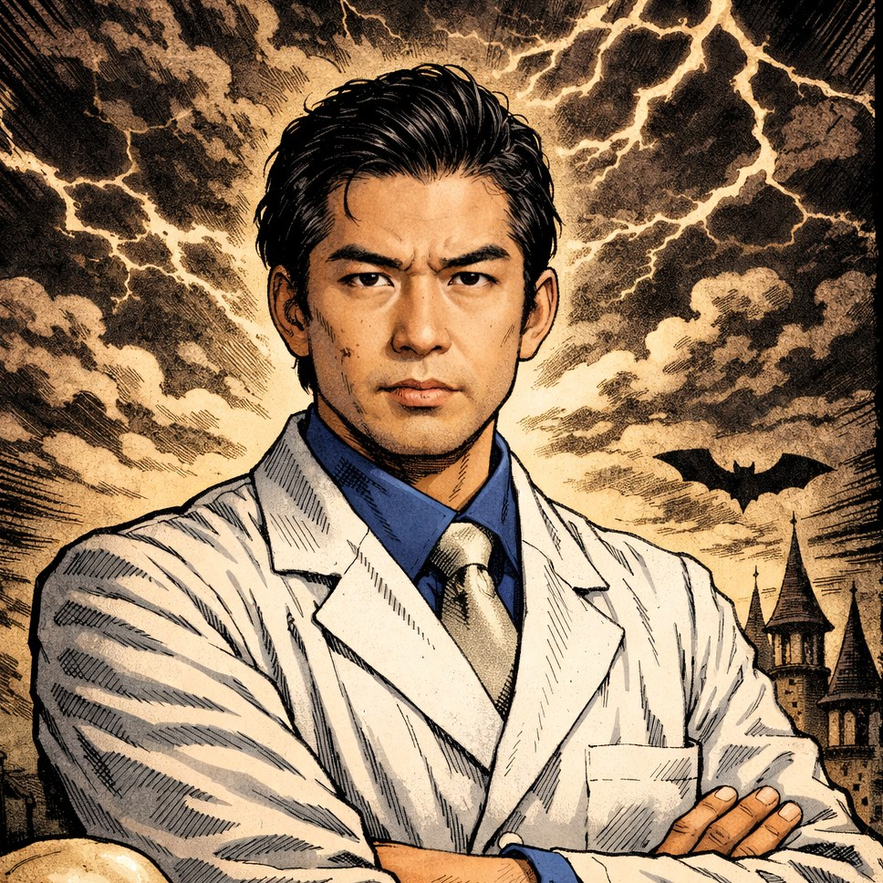

簡単な自己紹介やアピール。
素晴らしいデザインのウェブページが好きです。
| OS | Windows |
|---|---|
| Engine, Frameworks | Bootstrap / p5.js など |
| Tool | VS Code / GitHub など |
| 資格・免許 | 薬剤師,介護支援専門員,など |
ホームページを中心に集客、健康器具の販売
連絡先
学歴、職歴など
| 1997 年 | 東北薬科大学（現・東北医科薬科大学）卒 |
|---|---|
| 2010 年 | 〇〇株式会社設立 薬局経営を始める |
| 2016 年 | 〇〇株式会社を売却後 薬局経営から退く |
| 2016 年 | ナシュ・ミル株式会社設立 健康器具の販売 |
| 2020 年 | ナシュ・ミル株式会社の事務所の拠点を和歌山へ |
| 2025 年 | ZEN大学 入学 |